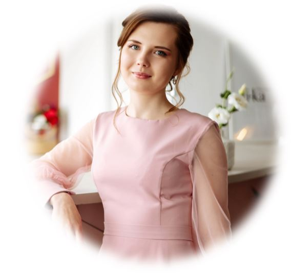
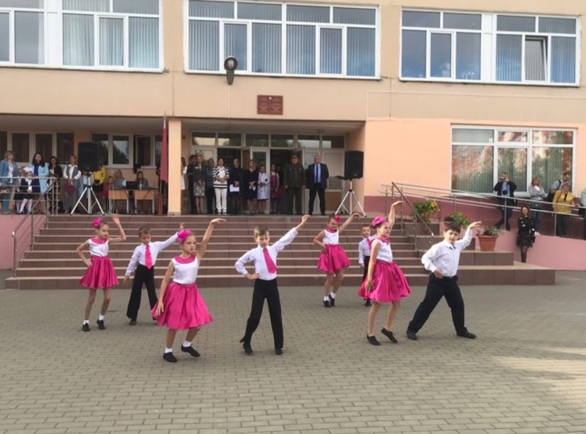

«Проект студия Амплуа»
Проект: студия «Амплуа»
Учреждение/руководитель проекта: Государственное учреждение образования «Боровлянская средняя школа» / Шахова Ирина Викторовна
Цель: создание мобильной театрально-анимационной студии «Амплуа» как средства развития коммуникативных и творческих способностей
учащихся
1. Итоговая статистика по проекту (количество):
| Категория | Количество |
|---|---|
| Дети | 52 |
| Родители | 7 |
| Специалисты | 6 |
2. Мероприятия проекта
В результате реализации проекта была закуплена музыкальная аппаратура и световое оборудование: микшерный пульт (1),
радиомикрофоны(4), проводные микрофоны(2), акустические системы: колонки(2), стойки под микрофоны(2), а также световые прожекторы
(3) и пульт управления (1) к ним. В помещении актового зала проводился косметический ремонт, замена мебели не осуществлялась.
| № | Наименование мероприятия/услуги | Категория/количество участников | Краткие результаты мероприятия |
|---|---|---|---|
| 1 | Праздник ко Дню знаний «1 сентября» | Дети, специалисты/ 20 | Мероприятие дало возможность проявить творческие способности учащихся, способствовало формированию у учащихся положительной мотивации к учебной деятельности. |
| 2 | Осенний бал «Королева Осени» | Дети, специалисты/20 | Мероприятие способствовало развитию у учащихся эстетического вкуса, творческих способностей, коммуникативных способностей, умению четко организовать практическую деятельность, формированию духовно-нравственных качеств личности. |
| 3 | Праздничная программа ко Дню учителя «Добрые слова для учителя» | Дети, специалисты, родители / 40 | Данное мероприятие способствовало воспитанию у учащихся уважительного отношения к учителю, труду педагога, формированию доброжелательных отношений между учащимися и педагогами, развитию творческих способностей учащихся. |
| 4 | Акция «Дорогое слово - МАМА» | Дети, специалисты, родители / 30 | Участие учащихся в акции «Дорогое слово - МАМА» способствовало воспитанию уважительного и бережного отношение к матери; развитию у них ответственность и чувство долга перед родителями; способствовало сплочению классного коллектива, путем создания на празднике доверительной, дружеской атмосферы. |
| 5 | Новогодний утренник | Дети, специалисты, родители/ 40 | В результате проведения данного мероприятия у учащихся был вызван интерес к предстоящему празднику и создано праздничное новогоднее настроение. |
| 6 | Объединение по интересам по вокальному творчеству «Боровляночка» | Дети, специалисты/ 19 | В результате деятельности объединения по интересам по вокальному творчеству у учащихся сформировались певческие навыки и выразительность исполнения творческих номеров. |
| 7 | Объединение по интересам по танцевальному творчеству | Дети, специалисты / 9 | В результате деятельности объединения по интересам по танцевальному творчеству у учащихся развились творческие способности, двигательные качества и умения: гибкость, пластичность, ловкость, координацию движений, силу, выносливость, танцевальные способности. |
| 8 | Объединение по интересам по театральному творчеству | Дети, специалисты / 22 | В результате деятельности объединения по интересам по театральному творчеству у учащихся развились творческие способности средствами театрального искусства. |
| 9 | Конкурс художественной самодеятельности учащихся «Самые талантливые» | Дети / 50 | Данное мероприятие дало возможность проявить у учащихся творческих способностей, сохранить национальную гордость. |
| 10 | Концертная программа к 23 февраля | Дети, специалисты, родители / 40 | Данное мероприятие способствовало воспитанию у учащихся уважения к людям, служившим в армии, позитивного отношения к службе в армии. |
| 11 | Праздничная программа «Любимые глаза», посвященная Международному женскому дню | Дети, специалисты, родители / 40 | Мероприятие способствовало развитию творческих интересов и способностей учащихся, удовлетворение их потребностей в общении, желании сделать приятным времяпрепровождение для мам и гостей, поздравить мам, бабушек, девочек класса с 8 Марта. |
| 12 | Праздничная программа к 9 мая | Дети, специалисты, родители / 40 | В результате мероприятия были созданы условия для формирования у учащихся чувства гордости за свою Родину, сохранения памяти о подвиге наших солдат в Великой Отечественной войне. |
| 13 | Тэатралізаваная пастаноўка на казку “Нямоглы бацька” У. Караткевіча | Дети, специалисты / 29 | В результате участия учащихся в театрализованной постановке у них развились творческие способности средствами театрального искусства. |
| 14 | Тэатралізаваная пастаноўка на ўрывак з п’есы “Напісанае застаецца” А. Петрашкевіча | Дети, специалисты / 29 | В результате участия учащихся в театрализованной постановке у них развились творческие способности средствами театрального искусства. |
| 15 | Тэатралізаваная пастаноўка на казку “Калядны сон” | Дети, специалисты / 29 | В результате участия учащихся в театрализованной постановке у них развились творческие способности средствами театрального искусства. |
| 16 | Тэатралізаваная пастаноўка на казку па правілах бяспекі “Кошкін дом” | Дети, специалисты / 29 | В результате участия учащихся в театрализованной постановке у них развились творческие способности средствами театрального искусства. |
| 17 | Віншавальная тэатральная праграма “Вочы маці – вечнасці акно” | Дети, специалисты / 29 | В результате участия учащихся в театрализованной постановке у них развились творческие способности средствами театрального искусства. |
| 18 | Тэатралізаваная пастаноўка на твор Міхася Лынькова “Васількі” | Дети, специалисты / 29 | В результате участия учащихся в театрализованной постановке у них развились творческие способности средствами театрального искусства. |
| 19 | Праздник “Последний звонок” | Дети, специалисты/ 20 | Данное мероприятие способствовало развитию у учащихся бережного отношения к традициям школы, воспитанию гражданственности и патриотизма. |
| 20 | Праздничная программа выпускного вечера «До свидания, школа» | Дети, родители, специалисты / 60 | Данное мероприятие способствовало развитию у учащихся бережного отношения к традициям школы, воспитанию гражданственности и патриотизма. |
3. Материалы, разработанные в проекте
| № | Наименование | Кому адресовано | Кратко о содержании |
|---|---|---|---|
| 1 | Программа объединения по интересам по вокальному творчеству «Боровляночка» | Новик Юлии Васильевне, заместителю директора по ВР ГУО «Гимназия № 18 г. Минска» | Данная программа рекомендована для занятий с детьми эстрадным вокалом. Спецификой ее является то, что учащиеся должны в короткий срок получить определенный набор знаний, умений и навыков, необходимых для самореализации в музыкально-творческой деятельности. |
| 2 | Концертная программа к 23 февраля | Новик Юлии Васильевне, заместителю директора по ВР ГУО «Гимназия № 18 г. Минска» | Праздничная, конкурсная музыкальная программа, посвященная 23 февраля, проходит в форме состязания по силе, ловкости и смекалке между двумя командами со взрослыми и детьми. |
4. Результаты решения проектных задач
5. Общая оценка прогресса/трудностей проекта.
Предложения по улучшению/изменениям
В результате реализации проекта успешно организован досуг учащихся, включено большое количество детей в театрально-анимационную
деятельность в качестве ее организаторов, участников; развиты коммуникативно-творческих способности детей, повышающих их адаптивные
качества, способствующие социальной успешности и устойчивости в будущем; создан положительный социальный эффект от проведения
культурно-массовых мероприятий на безвозмездной основе.
6. Прилагаемые фото мероприятий и ресурсных изменений (кабинеты, уголки, пособия) Прилагаются
7. История успеха

Ланевская Мария Сергеевна, педагог-организатор
ГУО «Боровлянская средняя школа»
«Студия Амплуа» – прекрасная возможность не только узнать новое, но и подкрепить новыми аргументами старые факты. Этот проект
позволяет открывать в себе новые грани: творческие, коммуникативные. Очень сильно расширяется круг знакомств, участники проекта
становятся друзьями и в будущем сообща делают много полезного.
Информация о ходе реализации проекта театральной студии «Амплуа»
1. Закуплена аппаратура, оборудованы места для реализации проекта, разработан план мероприятий.
2. Массовые мероприятия проходят в режиме сложной эпидемиологической ситуации, поэтому многие мероприятия перенесены на более
поздний срок.
3. Прошли следующие мероприятия:
01.09.2020 Торжественная линейка, посвященная Дню знаний.
02.10.2020 Концертная программа ко Дню учителя, посвящение молодых учителей
14.10 Литературный вечер, посвященный Дню матери
4. В рамках акции «Наши дети» показ спектакля для детей из опекунских и многодетных семей «Рождественская сказка» 05.01.2021
года.

Название образовательного проекта: Студия «Амплуа»
Название организации: государственное учреждение образования «Боровлянская средняя школа»
Директор организации: Клечан Андрей Леонидович
Руководитель (инициатор) проекта: Шахова Ирина Викторовна
Сроки реализации: 2020/2021 учебный год
Цель проекта: создание мобильной театрально-анимационной студии «Амплуа» как средства развития коммуникативных и
творческих способностей учащихся.
Актуальность (обоснование) проекта.
Одной из актуальных проблем современного образования является необходимость формирования у детей необходимых
социально-коммуникативных навыков, навыков социализации, толерантного отношения к людям, способствующих их жизнеустойчивости в
современном мире.
Современный мир – это мир гаджетов, мессенджеров и другой электронной техники, от которой дети находятся в тесной зависимости.
Коммуникативные навыки перестают быть востребованы молодым поколением и отходят на второй план. Важной задачей для педагогов и
родителей становится необходимость оградить детей от негативного влияния мира гаджетов, создать условия для творческого развития и
общения.
В этой связи в нашей школе возникла идея создания театрально-анимационной студии, в которой каждый ребёнок сможет проявить
индивидуальные творческие способности, вступить в активную конструктивную и досуговую коммуникацию. Деятельность студии «Амплуа»
будет направлена на сплочение детско-взрослого коллектива, формирование культуры поведения и общения учащихся, воспитание
толерантности, создание в школе культурно-образовательной атмосферы творчества и праздника.
Нами был проведен социальный опрос среди учащихся1-11 классов и их родителей с целью анализа предпочтений детей и родителей по
вопросами:
1. выбора видов внеурочной деятельности и ее организации,
2. выбору предпочитаемых видов взаимодействия в деятельности
(индивидуальное выполнение задания, работа в паре, творчество в группе).
3. Анализ результатов социального опроса.
Секции и студии, которые уже посещают обучающиеся по направлениям (100 опрошенных):
Спортивные секции – 20 человек;
Творческие кружки – 25 человек;
Ничего не посещают – 55 человек.
Выявление запроса родителей и обучающихся по предпочитаемым направлениям внеурочной деятельности:
Спортивные – 40%
Творческие - 60%
Выбор предпочитаемых видов взаимодействия в деятельности:
индивидуальное выполнение задания – 15%
работа в паре – 25%
творчество в группе – 60%
Было также проанализировано, что большую часть свободного времени дети проводят в социальных сетях, предпочитая это общение общению
«вживую»(%);
в то же время просматривает программы телепередач (…%);
избегает группового и коллективного взаимодействие на уроках (…%);
не посещает спортивные и творческие секции после занятий в школе (…%).
Создание мобильной театрально-анимационной студии «Амплуа» даст возможность каждому ребенку раскрыть свой творческий потенциал,
коммуникативные навыки и самоутвердиться, так как работа в студии предполагает реализацию не только актёрских, но и дизайнерских,
музыкальных, режиссёрско-сценаристских, менеджерских и других способностей. Главная идея студии – «Все дети – талантливы! Все люди –
творцы!». Занятия целевых групп детей в мобильной театрально-анимационной студии «Амплуа» станут эффективным средством раскрытия
уникальности каждого ребенка в совместной деятельности по подготовке спектаклей, культурно-массовых и анимационных мероприятий.
Содержание деятельности мобильной театрально-анимационной студии «Амплуа» предполагает:
Целевые группы проекта:
Первичная целевая группа:
Учащиеся школы:
Сценаристы-10
Дизайнеры костюма-10
Рекламщики-10
Продюсерская активность-10
Родители: 10
Педагоги: 10
Вторичная целевая группа:
педагоги: 10
родители: 60
участники анимационных программ и зрители театральных постановок:
Ожидаемые результаты:
Организован досуг учащихся участниками театральной труппы , включение большого количества детей в театрально-анимационную
деятельность в качестве ее организаторов, участников, зрителей.
Развита коммуникативно-творческих способностей детей, повышающих их адаптивные качества, способствующие социальной успешности и
устойчивости в будущем.
Положительный социальный эффект от проведения культурно-массовых мероприятий на безвозмездной основе.
Устойчивость проекта.
Деятельность театрально-анимационной студии «Амплуа» в школе на постоянной основе и включена в план работы школы, реквизит
используемый в проекте также используется в других видах школьной деятельности.
Логико-структурная схема проекта студии «Амплуа»
| Задачи проекта | Подзадачи | Действия/Индикаторы/Показатели | Ресурсы | Результат |
|---|---|---|---|---|
| 1.Создать мобильную театрально-анимационной студию «Амплуа» в школе | 1.1. создание материально-технического пространства и накопление реквизита | -ремонт помещения для работы творческих групп студии «Амплуа» | краска для стен, пола | Выполнен ремонт помещения |
| - закупка мебели | Шкафы для хранения декораций и костюмов | Закуплена мебель | ||
| - приобретение аппаратуры и оборудования | Материально – техническое оснащение (ноутбук, музыкальная аппаратура, колонки, микрофоны, световое оснащение, прожектор для сцены) | Приобретена аппаратура и сценическое оборудование | ||
| 1.2.Создание творческого коллектива | -распределение детей в творческие группы по видам деятельности в студии | Создание информационной базы для набора в студию «Амплуа» | Распределены дети в творческие группы | |
| 1.3.выработка направлений деятельности | - театральная деятельность | Костюмы, декорации | Создана театральная группа «Я-актер» | |
| -анимационная деятельность | Переносная музыкальная аппаратура, микрофоны | Создана анимационная группа «Я-аниматор» | ||
| -рекламно-информационная деятельность | Цифровое оборудование для распечатывания афиш и бигбордов, бумага, ватманы. Изготовление рекламного щита. |
Создана группа «Маркетинг и реклама» | ||
| -художественно-постановочная деятельность | Компьютер с выходом в интернет, принтер, бумага. | Созданы группы «Юный сценарист», «Искусство декора», «Магия костюма», | ||
| 1.4 деятельность по менеджменту | Разработка перспективного плана выездных мероприятий, обсуждение условий и возможностей принимающей стороны | факс, бумага | Создана группа «Я-менеджер (продюсер)», | |
| 2.Обеспечить функционирование мобильной театрально-анимационной студии «Амплуа» | 2.1 создание годового и перспективного плана работы студии | Разработка программы деятельности студии «Амплуа» | Организованная деятельность участников студии | Создан годовой и перспективный план работы студии |
| 2.2Художественно-постановочная деятельность | Разработка сценариев, проведение репетиций, постановка спектаклей, анимационных программ. | Деятельность студии в рамках мероприятий годового плана | Разработаны сценарии | |
| 2.3.Проведение театральных и анимационных мероприятий | Выступление театральных и анимационных групп. | Проведены театральные –анимационные мероприятия | ||
| 2.4.оказание театрально-анимационных услуг по проведению праздников потенциальным потребителям | Разработка сценариев, репетиция анимационной группы, выступления. | Аренда транспортного средства с целью гастролирования. | Проведены выступления | |
| 2.5.создание базы материалов: сценарии, медиа, аудио, видео | Информационная вкладка на сайте УО, база сценариев, афиши, компьютерное хранение информации. | Создана база материалов | ||
| 3.Подготовить педагогов, учащихся, законных представителей учащихся к организации и сопровождению театральной и анимационной деятельности детей в студии «Амплуа» | 3.1.повышение квалификации педагогов (курсы, мастер-классы) | -поиск курсов для педагогов | Повышена квалификация педагога | |
| 3.2 мастер-классы для детей | -разработка мастер-классов | Разработаны и проведены мастер-классы для детей | ||
| 3.3. посещение театров, театральных студий детьми и педагогами с целью анализа театральной деятельности | -поиск театрального репертуара и выезд педагогов и детей с целью посещения театров, театральных студий | Аренда транспортного средства с целью посещения. | Осуществлены выезды педагогов и детей в театры и театральные студии. | |
| 3.4.Организация и проведение собрания с законными представителями детей по вопросам создания и функционирования студии «Амплуа» | - разработка собрания с законными представителями детей | Организовано и проведено собрание с законными представителями |
План реализации деятельности мобильной театрально-анимационной студии «Амплуа»
| Срок реализации | Мероприятия | Участники |
|---|---|---|
| Август | Оборудование помещения, сцены, костюмерной. Приобретение аппаратуры и оборудования. |
Педагогические работники, технический персонал, администрация школы |
| Семинар-практикум для педагогов «Роль театрально-анимационной деятельности для развития творческого потенциала обучающихся» | Педагогические работники, администрация школы | |
| Создание творческих групп педагогов по направлениям театрально-анимационной деятельности. | Педагогические работники, администрация школы | |
| Создание декораций для театральной деятельности | Педагогические работники, администрация школы | |
| Сентябрь | Набор и распределение детей и взрослых в творческие группы по видам деятельности в судию «Амплуа». | Педагогические работники, учащиеся |
| Разработка программы и сценариев деятельности студии «Амплуа». | Педагогические работники, учащиеся | |
| Мастер-класс для учащихся «Основы актёрского мастерства» | Педагогические работники, учащиеся | |
| Репетиции спектакля «Подарок маме, бабушке» и музыкальной программы «Мамочка моя» | Педагогические работники, учащиеся | |
| Репетиция анимационной группы с программой «Мамочка моя» | Педагогические работники, учащиеся | |
| Создание годового и перспективного плана работы студии «Амплуа» | Педагогические работники, администрация школы | |
| Работа мастерской декорации создание костюмов и реквизитов для спектакля «Подарок маме, бабушке» | Педагогические работники, учащиеся | |
| Создание информационной вкладки на сайте ГУО «Боровлянская средняя школа» | Педагогические работники, администрация школы | |
| Октябрь | Акция «Подарок маме и бабушке своими руками» | Педагогические работники, администрация школы, учащиеся |
| Спектакль «Подарок маме, бабушке» | Педагогические работники, администрация школы, учащиеся | |
| Репетиция анимационной группы с программой «Мамочка моя» | Педагогические работники, администрация школы, учащиеся | |
| Анимационная деятельность: программа «Мамочка моя», | Педагогические работники, администрация школы, учащиеся | |
| Ноябрь | Мастер-класс для педагогов «Копилка материалов к Новому году» | Педагогические работники, администрация школы |
| Посещение театральной постановки с целью анализа театральной деятельности. | Педагогические работники, администрация школы, учащиеся, законные представители (родители) | |
| Репетиция спектакля «В гостях у Деда Мороза и Снегурочки» | Педагогические работники, учащиеся | |
| Работа мастерской декорации создание костюмов и реквизитов для спектакля «В гостях у Деда Мороза и Снегурочки» | Педагогические работники, учащиеся | |
| Декабрь | Театральная деятельность: спектакль «В гостях у Деда Мороза и Снегурочки» | Педагогические работники, учащиеся |
| Анимационная деятельность: программа «Новогодние забавы» | Педагогические работники, учащиеся | |
| Январь | Мастер-класс «Декорации как основной атрибут театральной деятельности» | Педагогические работники, учащиеся |
| Репетиция спектакля «Праздничный парад» | Педагогические работники, учащиеся | |
| Работа мастерской декорации создание костюмов и реквизитов для спектакля «Праздничный парад» | Педагогические работники, учащиеся | |
| Повышение квалификации (тематический семинар) для педагогов «Театральная деятельность как средство развития артистизма у учащихся» | Педагогические работники, администрация школы | |
| Февраль | Анимационная деятельность: программа «Праздничный парад» | Педагогические работники, учащиеся |
| Посещение театральной постановки с целью анализа театральной деятельности. | Педагогические работники, администрация школы, учащиеся, законные представители (родители) | |
| Репетиция театральных постановок «Кот Леопольд и мышата поздравляют всех женщин» и «Гуси-лебеди на новый лад» | Педагогические работники, учащиеся | |
| Работа мастерской декорации создание костюмов и реквизитов для спектакля «Кот Леопольд и мышата поздравляют всех женщин» | Педагогические работники, учащиеся | |
| Март | Анимационная деятельность: программа «Кот Леопольд и мышата поздравляют всех женщин» | Педагогические работники, учащиеся |
| Театральная деятельность: спектакль «Гуси-лебеди на новый лад» | Педагогические работники, учащиеся | |
| Посещение театральной студии детьми с целью анализа театральной деятельности. | Педагогические работники, администрация школы, учащиеся, законные представители (родители) | |
| Апрель | Повышение квалификации (тематический семинар) для педагогов «Особенности театральных игр в воспитании детей» | Педагогические работники, администрация школы |
| Май | Работа мастерской декорации создание костюмов и реквизитов для спектакля «Летние чудеса» | Педагогические работники, учащиеся |
| Создание костюмов для программы «Яркое лето» для выездной творческой группы | Педагогические работники, учащиеся | |
| Анимационная деятельность: программа «Яркое лето» | Педагогические работники, учащиеся | |
| Июнь | Театральная деятельность: спектакль «Летние чудеса» | Педагогические работники, учащиеся |
| Акция «Краски лета» | ||
| Повышение квалификации (тематический семинар) для педагогов Роль игры-драматизации в развитии актерских способностей у учащихся младшего школьного возраста» | Педагогические работники, администрация школы | |
| Июль | Посещение театральной постановки с целью анализа театральной деятельности | Педагогические работники, администрация школы, учащиеся, законные представители (родители) |
| Набор и распределение детей и взрослых в творческие группы на следующий год по видам деятельности в судию «Амплуа». | Педагогические работники, администрация школы, учащиеся, законные представители (родители) | |
| Август | Разработка программы и сценариев деятельности студии «Амплуа» на следующий год. | Педагогические работники, администрация школы |
Рабочий план
| № | Мероприятие | Ответственное лицо или организация | Месяцы реализации проекта | |||||||||||
| 1 | 2 | 3 | 4 | 5 | 6 | 7 | 8 | 9 | 10 | 11 | 12 | |||
| 1.1 |
Оборудование помещения, сцены, костюмерной. Приобретение аппаратуры и оборудования. |
Х | ||||||||||||
| 1.2 | Семинар-практикум для педагогов «Роль театрально-анимационной деятельности для развития творческого потенциала обучающихся» | Х | ||||||||||||
| 1.3 | Создание творческих групп педагогов по направлениям театрально-анимационной деятельности. | Х | ||||||||||||
| 1.4 | Создание декораций для театральной деятельности | Х | ||||||||||||
| 1.5 | Набор и распределение детей и взрослых в творческие группы по видам деятельности в судию «Амплуа». | Х | ||||||||||||
| 1.6 | Разработка программы и сценариев деятельности студии «Амплуа». | Х | ||||||||||||
| 1.7 | Мастер-класс для учащихся «Основы актёрского мастерства» | Х | ||||||||||||
| 1.8 | Репетиции спектакля «Подарок маме, бабушке» и музыкальной программы «Мамочка моя» | Х | ||||||||||||
| 1.9 | Репетиция анимационной группы с программой «Мамочка моя» | Х | ||||||||||||
| Создание годового и перспективного плана работы студии «Амплуа» | Х | |||||||||||||
| Работа мастерской декорации создание костюмов и реквизитов для спектакля «Подарок маме, бабушке» | Х | |||||||||||||
| Создание информационной вкладки на сайте ГУО «Боровлянская средняя школа» | Х | |||||||||||||
| Акция «Подарок маме и бабушке своими руками» | Х | |||||||||||||
| Спектакль «Подарок маме, бабушке» | Х | |||||||||||||
| Репетиция анимационной группы с программой «Мамочка моя» | Х | |||||||||||||
| Анимационная деятельность: программа «Мамочка моя», | Х | |||||||||||||
| Мастер-класс для педагогов «Копилка материалов к Новому году» | Х | |||||||||||||
| Посещение театральной постановки с целью анализа театральной деятельности. | Х | |||||||||||||
| Репетиция спектакля «В гостях у Деда Мороза и Снегурочки» | Х | |||||||||||||
| Работа мастерской декорации создание костюмов и реквизитов для спектакля «В гостях у Деда Мороза и Снегурочки» | Х | |||||||||||||
| Театральная деятельность: спектакль «В гостях у Деда Мороза и Снегурочки» | Х | |||||||||||||
| Анимационная деятельность: программа «Новогодние забавы» | Х | |||||||||||||
| Мастер-класс «Декорации как основной атрибут театральной деятельности» | Х | |||||||||||||
| Репетиция спектакля «Праздничный парад» | Х | |||||||||||||
| Работа мастерской декорации создание костюмов и реквизитов для спектакля «Праздничный парад» | Х | |||||||||||||
| Курсы по повышению квалификации педагогов «Театральная деятельность как средство развития артистизма у учащихся» | Х | |||||||||||||
| Анимационная деятельность: программа «Праздничный парад» | Х | |||||||||||||
| Посещение театральной постановки с целью анализа театральной деятельности | Х | |||||||||||||
| Репетиция театральных постановок «Кот Леопольд и мышата поздравляют всех женщин» и «Гуси-лебеди на новый лад» | Х | |||||||||||||
| Работа мастерской декорации создание костюмов и реквизитов для спектакля «Кот Леопольд и мышата поздравляют всех женщин» | Х | |||||||||||||
| Анимационная деятельность: программа «Кот Леопольд и мышата поздравляют всех женщин » | Х | |||||||||||||
| Анимационная деятельность: программа «Кот Леопольд и мышата поздравляют всех женщин » | Х | |||||||||||||
| Театральная деятельность: спектакль «Гуси-лебеди на новый лад» | Х | |||||||||||||
| Посещение театральной студии детьми с целью анализа театральной деятельности. | Х | |||||||||||||
| Курсы по повышению квалификации педагогов «Особенности театральных игр в воспитании детей» | Х | |||||||||||||
| Работа мастерской декорации создание костюмов и реквизитов для спектакля «Летние чудеса» | Х | |||||||||||||
| Создание костюмов для программы «Яркое лето» для выездной творческой группы | Х | |||||||||||||
| Анимационная деятельность: программа «Яркое лето» | Х | |||||||||||||
| Театральная деятельность: спектакль «Летние чудеса» | Х | |||||||||||||
| Акция «Краски лета» | Х | |||||||||||||
| Курсы по повышению квалификации педагогов «Опытно-экспериментальная работа по определению роли игры-драматизации в развитии актерских способностей у учащихся младшего школьного возраста» | Х | |||||||||||||
| Посещение театральной постановки с целью анализа театральной деятельности. | Х | |||||||||||||
| Набор и распределение детей и взрослых в творческие группы на следующий год по видам деятельности в судию «Амплуа». | Х | |||||||||||||
| Разработка программы и сценариев деятельности студии «Амплуа» на следующий год. | Х | |||||||||||||